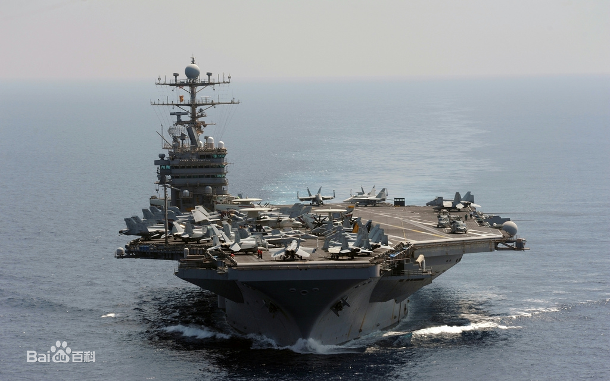
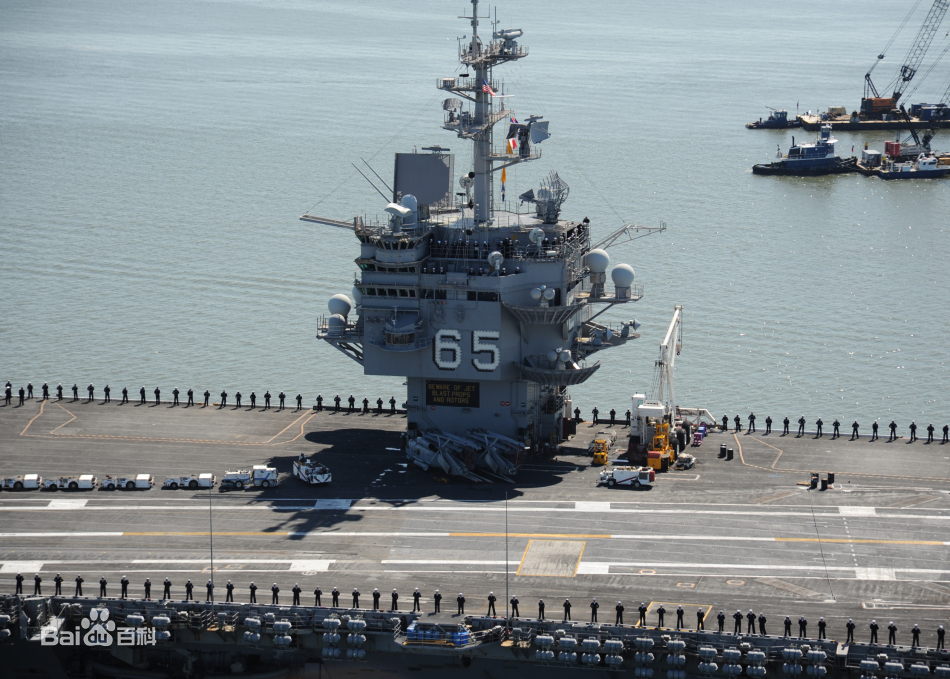
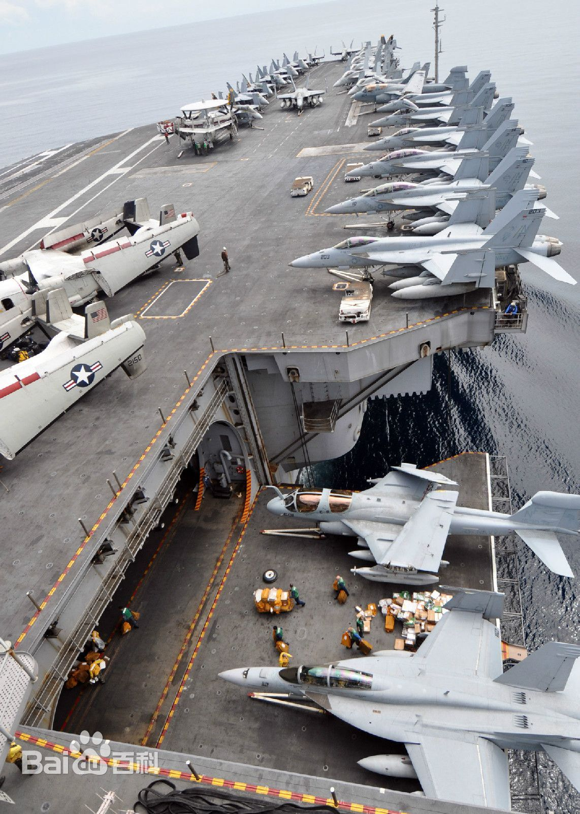
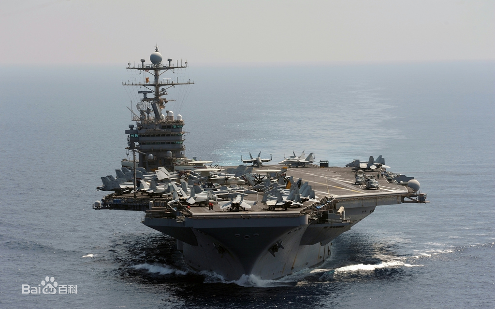
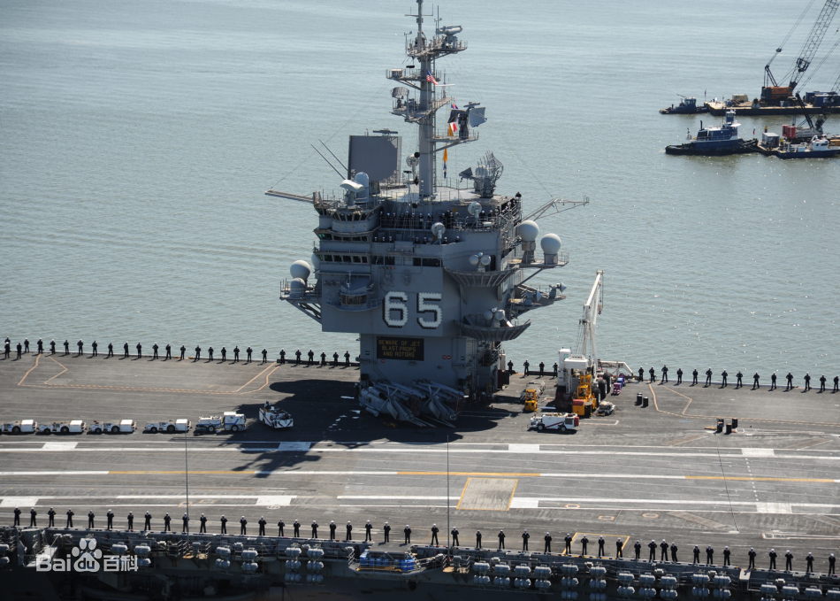
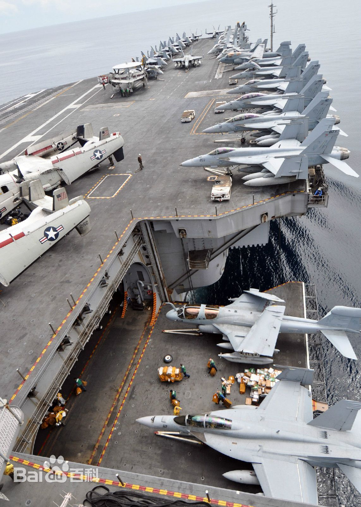
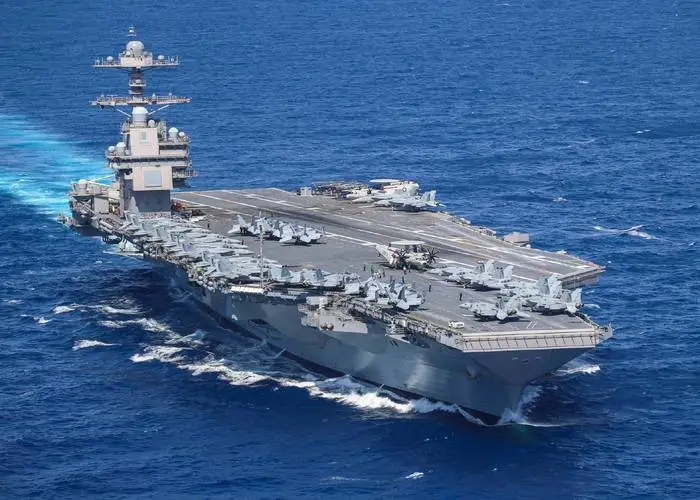
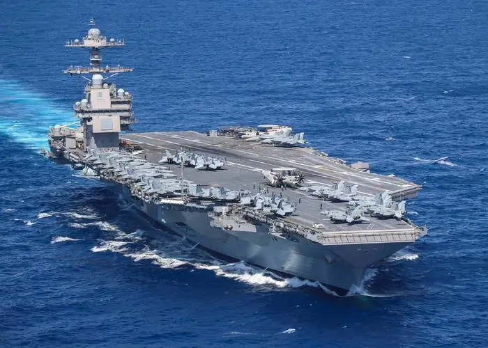

★自1970年代起，中国人民解放军海军已开展航母的研究。中国国内的航母意识开始增强
★从1985年开始，中国即开始对退役航母进行研究学习，取得了一些关于航母设计的启示。
★2011年6月，解放军首次证实，中国首艘航空母舰正在建造当中，但还没有建成。同年8月10日，瓦良格号首次进行航海试验，在其后一年间，陆续进行了多次海试。9月航母被拍到涂上舷号「16」字样，之后正式交付给海军。
★2012年9月25日，辽宁舰正式入列。时任中共中央总书记、国家主席、中央军委主席胡锦涛出席交接入列仪式并登舰视察。
★2019年12月17日，经中央军委批准，中国第一艘国产航母命名为“中国人民解放军海军山东舰”，舷号为“17”。山东舰在海南三亚某军港交付海军。
★2022年6月17日，经中央军委批准，中国第三艘航空母舰命名为“中国人民解放军海军福建舰”，舷号为“18”。
航母发展
重要时间节点
中国航母发展沿革
1928:
时任国民党海军署长的陈绍宽，便在呈文中首次提出要建造航空母舰。这只晚于英国人建成世界上第一艘具有全通式飞行甲板的“竞技神”号航母仅仅10年。
1929年:
江南造船厂自制的“咸宁”炮舰成军，军事委员会委员长蒋介石于“咸宁”舰成军仪式上讲演说：“要挽回国家的权利，必须建设很大的海军，使我们中华民国成为世界上一等海军国，全在诸位将士身上。
1930年:
海军部提出了一份包含航空母舰、装甲巡洋舰、潜水艇的庞大六年造舰计划
1932年:
陈绍宽将军担任海军部部长后，中央海军开始转入一段较为稳定的发展时期。
1937年8月:
为阻止日本舰队沿江西上，国民政府用沉船在江阴建立了一道封锁线。日军为打通封锁线，动用航母上的飞机实施大规模轰炸，将防守封锁线的国民党海军第一舰队几乎所有舰艇炸沉。此后，日本航母经常出没于中国沿海，配合陆上作战行动。
1937年12月:
江阴海战自1937年8月16日江阴大战拉开序幕至12月1日江阴失守（江阴炮台12月3日失守），前后共历时108日。江阴海战是抗日战争中罕见的陆海空三栖立体作战，也是抗战期间唯一一次海军战役；长年威震中国海疆的舰队，一部分在烟台自沉，主力则全数沉在江阴，是中日甲午战争以来最重大的损失。
1943年11月:
陈绍宽代表海军部再次提出海军建设的规划。在这次规划中，他已经不再满足于拥有几艘航母了，而是要建造几个航母群。
1945年8月:
陈绍宽拉上军政部部长陈诚、铨叙厅（主管人事）厅长钱卓伦，结合现有海军舰艇情况，制定了《海军分防计划》。该计划对几年前的规划作了修订，将拥有航母的数量从20艘减为12艘，目的是让更多的人接受这一方案。
1946年6月:
蒋介石发动了对解放区的进攻，大规模的内战全面爆发。国民党海军被卷入内战中，陈绍宽的强海军梦随之破灭，航母梦也自然烟消云散。中国人第一次拥有航母的努力就此结束。
1949年:
新中国成立后，毛主席曾高瞻远瞩地提出“必须大搞造船工业，大量造船，建设海上‘铁路’，以便今后若干年内，建设一支强大的海上战斗力量。”周恩来心中也有挥之不去的航母情结。
1973年10月：
周恩来在会见外宾时感慨地说：“我们南沙、西沙被南越占领，没有航空母舰，我们不能让中国的海军再去拼刺刀。我搞了一辈子军事、政治，没有看到中国的航母。看不到航空母舰，我是不甘心的啊！”
1999年4月：
中国从乌克兰购得满载排水量达到67500吨的真航母--“瓦良格号”
2000年6月17日：
自前苏联解体后“瓦良格号”便停止了生产和组装，计划启程回国。
2002年3月3日：
“瓦良格号”抵达大连。
2012年9月25日:
中国首艘航母辽宁舰交接入列。
2012年11月23日:
歼-15舰载机首次在辽宁舰上成功起降。
2013年11月19日：
山东舰在大连造船厂开始建造
2013年11月28日:
辽宁舰首次通过台湾海峡进入南海。
2015年7月:
辽宁舰首次组织实弹射击，全部命中。
2016年12月24日:
辽宁舰首次赴西太平洋海域组织训练。
2017年：
中国完成了首艘国产航空母舰的建造，相比于辽宁舰相比，山东舰的设计更为先进，拥有更强的远海作战能力和更多的先进技术。
2017年7月7日:
辽宁舰航母编队抵达香港。
2018年4月12日:
辽宁舰编队亮相南海大阅兵。
2018年9月:
海军舰载航空兵舰基起降技术。
2022年6月17日：
第二艘国产航空母舰“福建舰”完成建造下水，福建舰在技术上取得了巨大突破，使其一旦正式入列，将成为全世界最大的在役常规动力航空母舰。
2023年4月10日:
东部战区证实，10日，东部战区继续组织环台岛战备警巡和“联合利剑”演习，海军山东舰航母编队参加了今天的演练。
在战区联合作战指挥中心统一指挥下，诸军兵种密切协同，模拟实施联合封控、信火打击，全面检验部队在联合作战体系支撑下的联合侦察、联合指挥、联合行动、联合保障。
同在10日，日本统合幕僚监部发布消息称，4月10日，日本海上自卫队观测到中国海军航母舰编队出现在台湾以东的太平洋海域。
日本海自称，航母山东舰曾在宫古岛以南230公里到430公里附近海域徘徊。台湾地区防务部门4月10日通报称，4架歼-15舰载机出现在台岛东部，这是台军首次通报我军舰载战斗机出现在台岛东部。
2023年4月23日:
辽宁舰常态保持警戒战备值班体系，以及武器装备待战状态，多次组织防空反潜等科目训练。
期间，外军舰机持续抵近侦察和跟踪监视。
辽宁舰官兵稳慎处置，有效应对，在面对面较量中精准掌握海空态势，持续检验战法训法。
报道称，74年来，人民海军不断推进主战装备建设，潜艇最大自给力战备远航，水面舰艇远海训练，航空兵远程奔袭成为常态。
随着实战化训练向远海远域不断拓展，人民海军已经成为捍卫国家主权，维护国家海洋权益，应对多种安全威胁的，完成多样化军事任务的海上钢铁长城。
报道提到，本月初，东部战区组织环台岛战备警巡和“联合利剑”演习，海军山东舰航母编队参加了此次演练。
而就在近日，另一艘航母辽宁舰还在西太平洋某海域，开展了防空，反潜等多科目训练，锤炼航母编队的远海体系作战能力。
西太平洋海域，深蓝色的海面一望无垠。随着一级战斗部署拉响，辽宁舰各战斗人员迅速就位，一架架歼-15战机展开机翼喷出烈焰一飞冲天。

构设实战化部署场景，突出远海实战化部署实战实训，坚持体系用兵动态塑势和战训耦合，在实战环境中练指挥、研战法、摸底数、强能力。
锤炼航母编队远海体系作战能力。
辽宁舰常态保持警戒战备值班体系，以及武器装备待战状态，多次组织防空反潜等科目训练。
期间，外军舰机持续抵近侦察和跟踪监视。
辽宁舰官兵稳慎处置，有效应对，在面对面较量中精准掌握海空态势，持续检验战法训法。
辽宁舰官兵抓住远海实战部署的契机，聚焦战斗力提升，以时不我待只争朝夕的精神状态，来拖创新，攻坚克难，不断把航母事业向前推进。
辽宁舰与包括2艘055型大型导弹驱逐舰在内的4艘驱护舰和1艘补给舰，结束了为期半个月的西太演训，经冲绳本岛和宫古岛之间的宫古海峡返回东海。
辽宁号信息
中国辽宁号航母是前苏联库兹涅佐夫级的第二艘航母瓦良格号，最初这艘船被命名为里加号，她于1985年在乌克兰的尼古拉耶夫造船厂建造。
这艘航空母舰于1988年下水。苏联解体后，建造工程停止了。俄罗斯将船体交给了乌克兰。
瓦良格号完成了70%的建造任务，但它没有安装推进装置、武器或电子设备。乌克兰政府没有资金和理由来完成这艘航空母舰的建造。
1998年，瓦良格号以2000万美元的价格卖给了总部位于澳门的娱乐公司。
瓦良格号于2002年抵达中国，它停靠在大连的海军造船厂，一直在严密保密的情况下驻扎在那里。
当时，瓦良格号已移交给中国海军进行研究和修复。当时这艘船的状况很差。
然而，中国开始了大量的修复工作。修复工作于2006年完成。最终，该舰于2012年作为辽宁号航母服役于中国海军。目前这艘航空母舰正在服役。
辽宁号航母能够运行多达50架固定翼飞机和直升机组成的混合机队。
2006年，据报道，中国订购了两架俄罗斯苏33舰载海军战斗机进行试验和评估。2007-2008年交付。
目前辽宁号航母使用的是中国的歼15舰载战斗机。中国歼15飞机是基于俄罗斯苏33战机的设计。
歼15战机配备了本土发动机、武器和雷达。辽宁号航母还搭载了中国直8海军直升机、俄制卡27反潜搜救直升机、以及俄制卡31机载预警直升机。辽宁号共有10个直升机着陆点。
辽宁号航母上没有弹射器，飞机的起飞是由一个倾斜12度的船头滑跃甲板来辅助的。
飞行甲板上装有拦阻索。辽宁号航母上的两个右舷升降机将飞机从机库运送到飞行甲板。
改装后，辽宁号去掉了所有进攻性武器。现在辽宁号只携带短程防御武器。该舰配备了四联装海红旗10短程防空导弹发射器。每个发射器有18个单元。
此外，辽宁号还有三联装1130近距离武器系统和双联装反潜火箭发射器。每个反潜火箭发射器有12个发射管。
航母发展
1913年日本商船改装为水上飞机母舰“若宫”号，被认为是世界上第一艘“航母”。
第二年，也就是1914年，日本用这艘水上飞机母舰轰炸了德国控制下的青岛港。这是近代中国人认识航母的开始。
1926年，张作霖海军率先装备了两艘水上飞机母舰——“镇海”和“威海”。
后来，北伐军曾装备932吨的“德胜”、“威胜”两艘水上飞机母舰，因为吨位实在太小，发挥不了什么作用。
20世纪30年代从日本购买的轻巡洋舰“宁海”能搭载一架水上飞机。1935年，中华民国海军总司令陈绍宽曾向蒋介石提出建造或购买3-4艘航空母舰。蒋介石文字上批准了，但却拨不出钱来。
1945年抗战胜利后，陈绍宽再次提出建造航母。结局同前一次一样。
对此，陈绍宽准备了一个“分30年建造完成”的计划。然而，随着他本人被迫辞职，关键的是国民党在战争中丢掉大陆，所谓30年造舰计划只是一套纸上画图。
中国共产党早就注意到航母的发展，在延安窑洞里就搞过航母知识“讲座”，但是用的是美国航母的照片。
航母福建舰简介
2022年6月17日，我国第三艘航空母舰下水命名仪式在中国船舶集团有限公司江南造船厂举行。
经中央军委批准，我国第三艘航空母舰命名为“中国人民解放军海军福建舰”，舷号为“18”。
一年来，福建舰的“一举一动”都备受关注，始终是国人眼中的焦点。
我国完全自主设计建造的首艘弹射型航空母舰，采用平直通长飞行甲板，配置电磁弹射和阻拦装置，满载排水量8万余吨。
2022年6月17日晚，海军新闻发言人刘文胜海军大校就福建舰命名、部署地、性能特点及试验安排等问题发布了相关信息。
谈到第三艘航空母舰为何命名为福建舰时，刘文胜表示，根据中国人民解放军海军舰艇命名规则，航空母舰一般以省级行政区划命名。
关于福建舰将来会部署在哪里，刘文胜介绍说，我们将统筹考虑维护国家主权、安全、发展利益需要，以及航空母舰运用特点、港口保障条件，科学选择福建舰部署地点。
刘文胜表示，福建舰下水后，将展开系泊试验和航行试验，下步根据各项工作进展情况统筹安排交接入列工作。
2022年6月30日下午，国防部举行例行记者会，国防部新闻局副局长、国防部新闻发言人谭克非大校就中国在福建舰之后是否会继续建造更多大型航空母舰答记者问。
他表示，对于中国航空母舰的后续发展计划，我们将按照国家安全需要和装备技术发展情况综合考虑。
据2023年4月22日央视新闻频道的《军情时间到》栏目报道，福建舰后续的辅助动力测试、系泊试验顺利展开，海试指日可待。军事专家曹卫东在节目中表示，作为我国首艘电磁弹射型航母，福建舰的海试内容与之前的2艘航母会有很大不同。
排水量增加了，舰大了，动力肯定会增加，动力系统也有不同；对电力的要求也非常大，电力的测试也跟以前不同；在舰机协同、配合方面，测试时与滑跃起飞的航母肯定也有很大不同。
福建号航母作为海上巡弋的移动机场，凭借舰上搭载的舰载机，在海战中的重要性丝毫不比那些战斗舰差。
为此，不少国家都将航母作为海战中优先打击的高价值目标，这也使得航母对防御的需求逐渐扩大。
据悉，福建号航母这32部阵列并非都是同一用途的雷达，其中有负责米波远程预警，S波段广域搜索，X波段火力引导和低空补盲，电子战对抗等多种功能。
这些功能的雷达在其他国家的航母上也能发现，但福建号做到了以更低的价格，让其技术体制更为专业，效率更高。
而这也预示着，未来中国海军的舰艇将会统一到“瓷砖数量”上，不会再有过去交错的雷达天线和基座布置。
实现相控阵化后，雷达的性能和搜索角度非但不会减少，反而会因为新体制的加入，效率和作战精度有了成倍提升。
而作为055驱逐舰后第二款“满身贴片”的舰艇，福建号航母似乎还承担着其他实验性质的任务。
自055驱逐舰开创战斗舰发展的新纪元后，许多国家都在模仿它的外形，整合更多的雷达阵列数量，以期获得更高的作战能力。
但由于电磁自干扰和能源供应等诸多技术的不足，它们目前最多只能做到3种波段阵列的共存，许多国家仍旧是以2种波段为新舰艇的主要用途。
即便是美国海军，它的下一代舰艇在设计上，也没有实现055驱逐舰这般丰富的配置。
而渐入佳境的中国海军，在福建号航母上积攒出的经验，也的确可以运用到下一代驱逐舰上。


 





 
